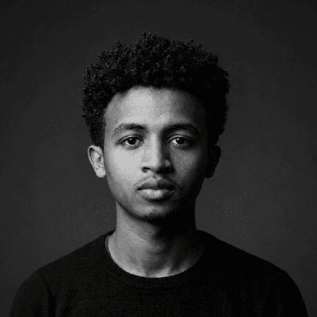
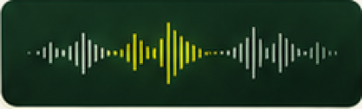

01 / LEARNING
LLMs / LoRA
Model adaptation and fine-tuning.
Machine learning & speech technology

/NOW · LEARNING JOURNAL
A quieter space for what I’m learning and building now.
LLMs / LoRA · TypeScript / backend · Computer architecture
01 / LEARNING
Model adaptation and fine-tuning.
Machine learning & speech technology
02 / LEARNING
Deepening backend engineering.
Software engineering
03 / LEARNING
Core concepts and system design.
Computer Systems and Software Engineering
Two-person EN↔KK translation utility.
